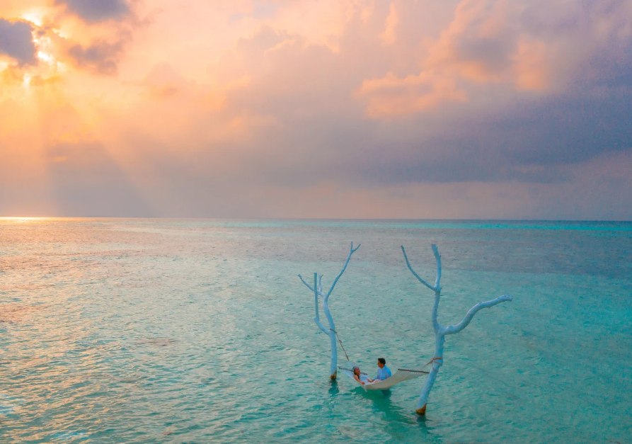
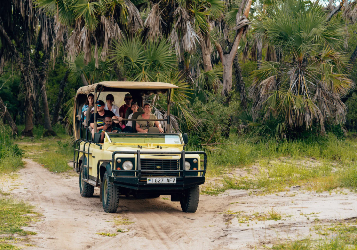
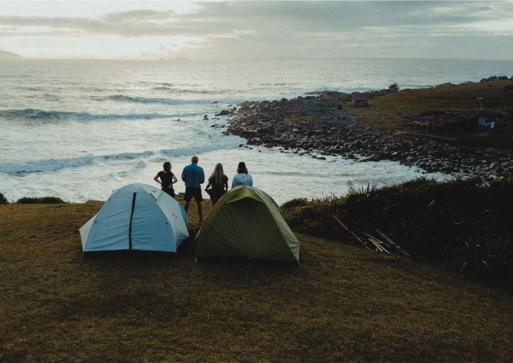
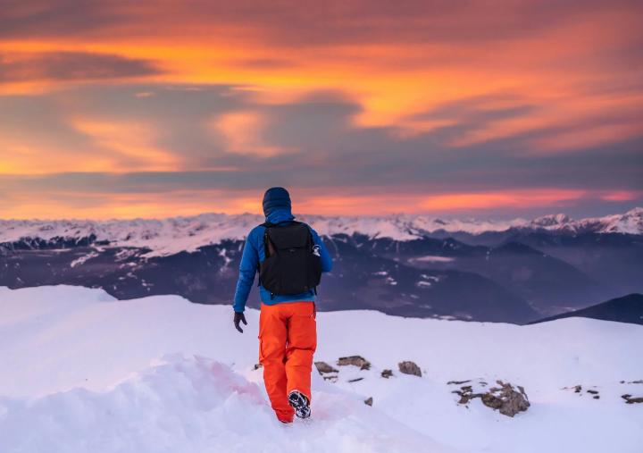

Viajes de luna de miel

Desde playas paradisíacas con atardeceres infinitos hasta ciudades llenas de historia y encanto, cada destino puede convertirse en el escenario ideal para empezar una nueva vida juntos.

Desde playas paradisíacas con atardeceres infinitos hasta ciudades llenas de historia y encanto, cada destino puede convertirse en el escenario ideal para empezar una nueva vida juntos.

Atrévete a cruzar ríos, escalar montañas y perderte en paisajes donde la naturaleza marca el rumbo. Cada paso es un reto, cada destino una historia que contar, y cada aventura una forma de sentirte más vivo que nunca.

Compartir risas, descubrir juntos y ver el mundo. En cada viaje en familia se crean recuerdos que duran toda la vida, y momentos que unen más que cualquier distancia.

Hay lugares que te invitan a conectar, a dejarte llevar y a disfrutar de tu propio ritmo. En un viaje para singles, el destino eres tú mismo: nuevas amistades, emociones inesperadas y la libertad de empezar de nuevo en cada kilómetro.